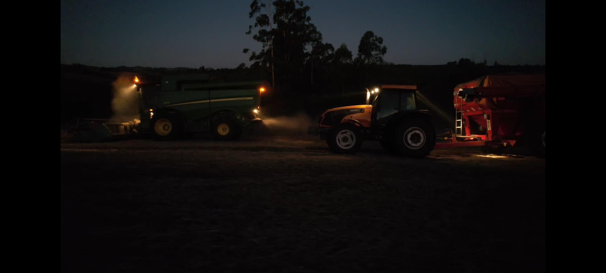

O campo com suas paisagens abertas e tranquilas.

A cidade com sua agitação e edifícios altos.
Explorando as diferenças e semelhanças através de fotos
O campo com suas paisagens abertas e tranquilas.
A cidade com sua agitação e edifícios altos.

Atividades agrícolas que conectam o campo à nossa alimentação.

O ritmo acelerado da vida urbana.